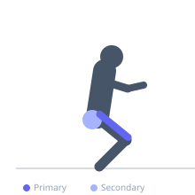
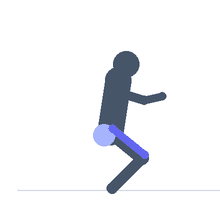

Exercise guide / Smith Machine Front Squat
Smith Machine Front Squat
The Smith machine front squat positions the bar across the front deltoids and clavicles, guided by the machine's fixed vertical track. The guided bar path removes the balance demands of a free-weight front squat, allowing the lifter to focus entirely on quad depth and torso position. The front rack position promotes an upright torso and maximal quadriceps recruitment.
Primary muscles
rectus femoris
vastus lateralis
vastus medialis
vastus intermedius
Secondary muscles
gluteus maximus
Stabilizers
erector spinae
transverse abdominis
Equipment
Smith Machine


Starting position
- Position the Smith machine bar across the front deltoids (front rack position). Cross the arms over the bar or use a clean grip. Feet shoulder-width, toes turned out slightly, feet positioned slightly forward of the bar.
Setup
- Set the Smith machine bar at upper-chest height. Step under and position bar on front delts. Rotate the bar to unlock.
Steps
- Step 1: Brace the core and keep the elbows high throughout the movement.
- Step 2: Bend the knees and squat down, keeping the torso very upright.
- Step 3: Descend until thighs are at or below parallel.
- Step 4: Drive through the feet to return to the starting position.
Coaching cues
- Elbows stay high
- Sit tall between the knees
- Drive the floor away
Breathing
- Inhale and brace before descent. Exhale at the top.
Range of motion
- Full depth — hip crease below the knee. The upright torso makes this more achievable.
Tempo
- 3-0-1-0
Common mistakes
- Elbows dropping, allowing the bar to roll off the delts
- Knees caving inward
- Insufficient ankle mobility causing heel rise
Safety
- Ensure elbow flexibility for the front rack — use a crossed-arm grip if needed
- The Smith machine's fixed path can stress the knees if foot position is incorrect
Training
- strength: 3–8 reps
- hypertrophy: 8–15 reps
- strength: 3–4 sets
- hypertrophy: 3–4 sets
- Rest: {'strength': 150, 'hypertrophy': 90}